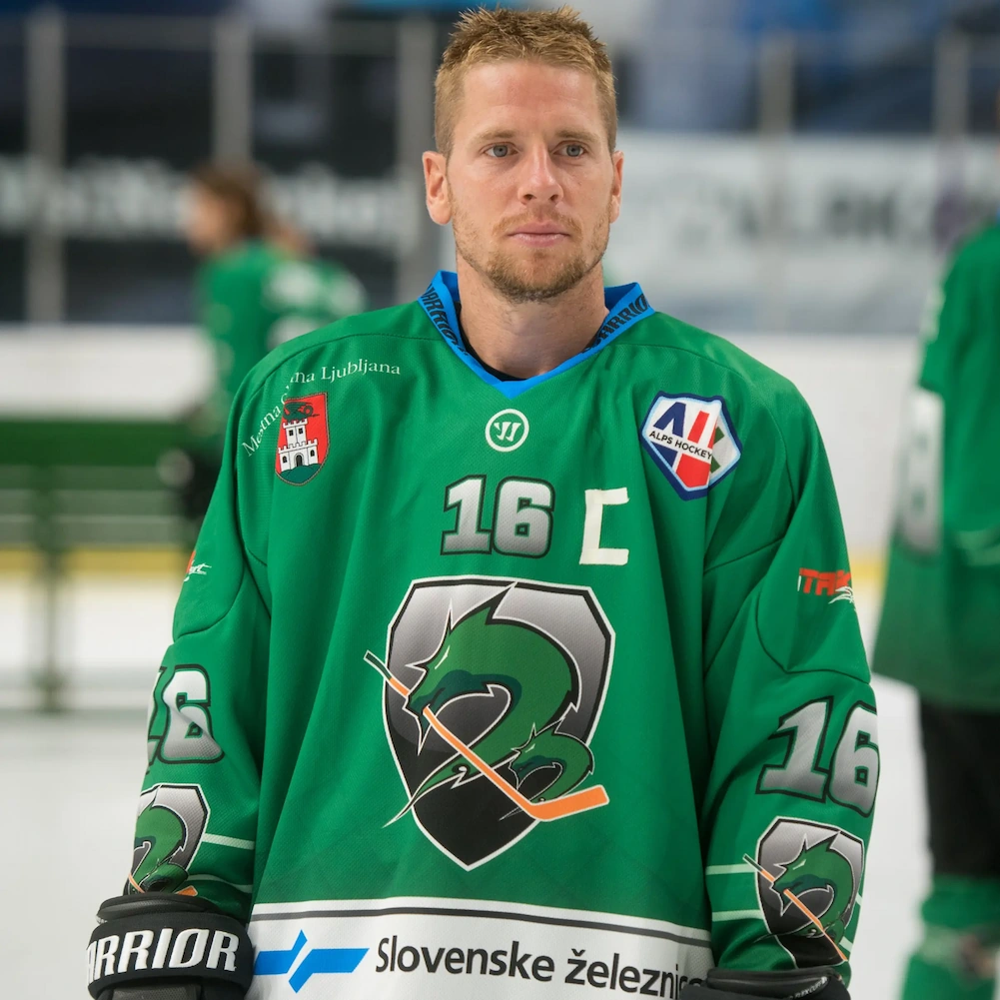
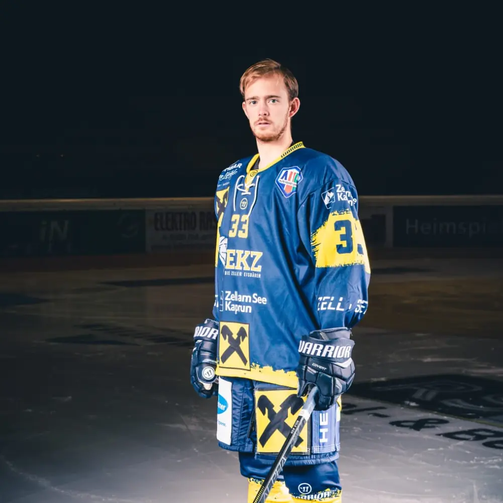
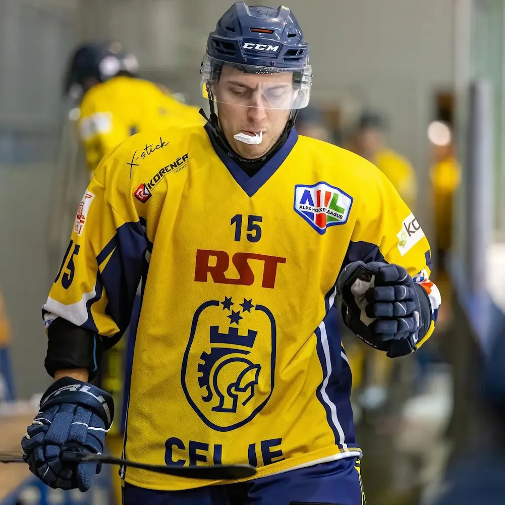

O nas
Živjo! Sem Aleš Mušič, nekdanji hokejist Olimpije. Moja ljubezen do hokeja se je začela že v otroštvu, ko sem pri štirih letih naredil prve korake na ledu. Leta 2000 sem prvič oblekel dres članske zasedbe Olimpije in igral dolgih 22 let. V svoji dolgoletni karieri sem z Olimpijo osvojil 11 naslovov državnih prvakov, 3 naslove pokalnih prvakov, ter 2 naslova v Alpski ligi. Prav tako sem bil član slovenske reprezentance na 10 svetovnih prvenstvih in dvojih Olimpijskih igrah. Leta 2022, pri 40 letih, sem se odločil, da je čas za nove izzive izven ledenih ploskev. Odhod iz Olimpije ni bil lahek, a verjamem, da je prav, da mlajši igralci dobijo priložnost in nadaljujejo tradicijo kluba. Hvaležen sem za vse trenutke, ki sem jih preživel na ledu, in za vse ljudi, ki so me podpirali na tej poti. Hokej bo vedno del mene, in čeprav ne igram več profesionalno, bom vedno ostal povezan s tem športom. Trenutno svoje dragoceno znanje predajam mladim nadobudnim hokejistom in v tem neizmerno uživam.

Zdravo! Sem Jure Sotlar, slovenski hokejist iz Ljubljane. Hokej je bil vedno moja strast, že od prvih korakov na ledu pri mladinskih selekcijah HK Olimpija. Tam sem rasel kot igralec in spoznal, kaj pomeni predanost temu športu. Skozi leta sem imel priložnost igrati v različnih klubih in preizkusiti svojo vzdržljivost ter spretnost na ledu. Kot napadalec sem se vedno trudil biti hiter, tehnično podkovan in nepredvidljiv za nasprotnike. Eden izmed vrhuncev moje kariere je bil tudi nastop na svetovnem prvenstvu v inline hokeju leta 2017, kjer smo osvojili prvo mesto in napredovali v elitno skupino. To je bil neverjeten občutek! Poleg igranja mi je pomembno tudi predajanje znanja mlajšim generacijam. Hokej ni le šport, je način življenja, ki te nauči discipline, vztrajnosti in ekipnega duha. Ne glede na to, kje igram, vedno dajem vse od sebe in uživam v vsaki tekmi. Hokej mi je dal ogromno in želim si, da bi tudi drugi občutili to strast in ljubezen do igre. Poleg hokeja se ukvarjam tudi z individualnimi treningi, saj rad delam z otroki in s tem predajam svoje znanje na mlajše hokejske navdušence.

Živjo sem Mark Sojer rojen 19. 3. 2002 in sem prve hokejske korake naredil pri HK Olimpija Ljubljana. Hokejska pot me je kasneje vodila v Avstrijo in sicer v Beljak, kjer sem dobil izkušnje igranja v tujini. V profesionalni karieri sem igral za HDD Jesenice, kjer smo tudi zmagali Alpsko ligo. Nato sem hokejsko pot nadaljeval v HK Celju prav tako v Alpski ligi. Sedaj pa nastopam barve LE Kings v avstrijski štajerski. Igram na poziciji napadalca in imam dobre tehnične sposobnosti. Delo z mladimi hokejisti mi je v čast in si želim svoje hokejsko znanje deliti z njimi.
